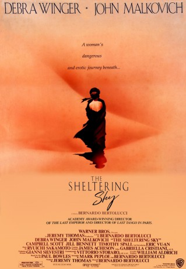

#7634 Himmel über der Wüste
Alternativ: The Sheltering Sky
Auszeichnungen: 1 GoldenGlobes gewonnen 1 BAFTA-Awards gewonnen
 
 IMDB-Wertung: 6.8 / 10
IMDB-Wertung: 6.8 / 10  Metascore: 0
Metascore: 0 
The American artist couple Port and Kit Moresby travels aimless through Africa, searching for new experiences that could give new sense to their relationship. But the flight to distant regions leads both only deeper into despair.
Jahr: 1990
Dauer: 137 Minuten
FSK: 12
Land: England Studio: Warner Bros.Tonspuren:
Untertitel: Deutsch,
Auflösung: 1080p (1920x1080) Größe: 11161 MB
Genre: Drama, Abenteuer
Regisseur:  Bernardo Bertolucci
Bernardo Bertolucci
Drehbuch: Lisa Niemi
Soundtrack:
Darsteller:
 Debra Winger als Kit Moresby
Debra Winger als Kit Moresby John Malkovich als Port Moresby
John Malkovich als Port Moresby Campbell Scott als George Tunner
Campbell Scott als George Tunner Timothy Spall als Eric Lyle
Timothy Spall als Eric Lyle- Amina Annabi als Mahrnia
- Sotigui Kouyaté als Abdelkader
 Nicoletta Braschi als French Woman
Nicoletta Braschi als French Woman- Paul Bowles als Narrator
- Jill Bennett als Mrs. Lyle
- Eric Vu-An als Belqassim
- Philippe Morier-Genoud als Captain Broussard
- Tom Novembre als French Immigration Officer
- Ben Smaïl als Smail
- Kamel Cherif als Ticket Seller
- Mohammed Afifi als Mohamed
- Brahim Oubana als Young Arab
- Carolyn De Fonseca als Miss Ferry
- Veronica Lazar als Nun
- Rabea Tami als Blind Dancer
- Samiri Menouer als Bus Driver
- Keltoum Alaoui als Woman in Hotel du Ksar
- Mohamed Ixa als Caravan Leader
- Ahmed Azoum als Young Tuareg
- Alghabid Kanakan als Young Tuareg
- Gambo Alkabous als Young Tuareg
- Sidi Kasko als Young Tuareg
- Azahra Attayoub als Belqassim's Wife
- Maghnia Mohamed als Belqassim's Wife
- Oumou Alghabid als Belqassim's Wife
- Sidi Alkhadar als Little Sidi
- Mouss als Bit Part , uncredited
Datei: X:\1990\Himmel über der Wüste (1990, FSK12, 1920x1080).mkv seit 29.11.2017
Festplatte: HD 1987-1991
 Es gibt insgesamt 52 Filme in der Gruppe '1990'
Es gibt insgesamt 52 Filme in der Gruppe '1990'